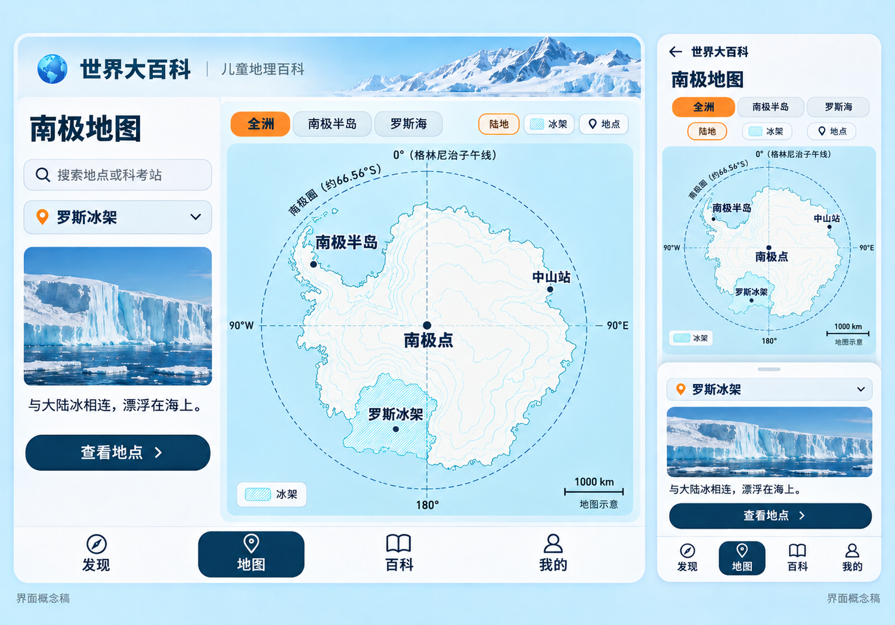
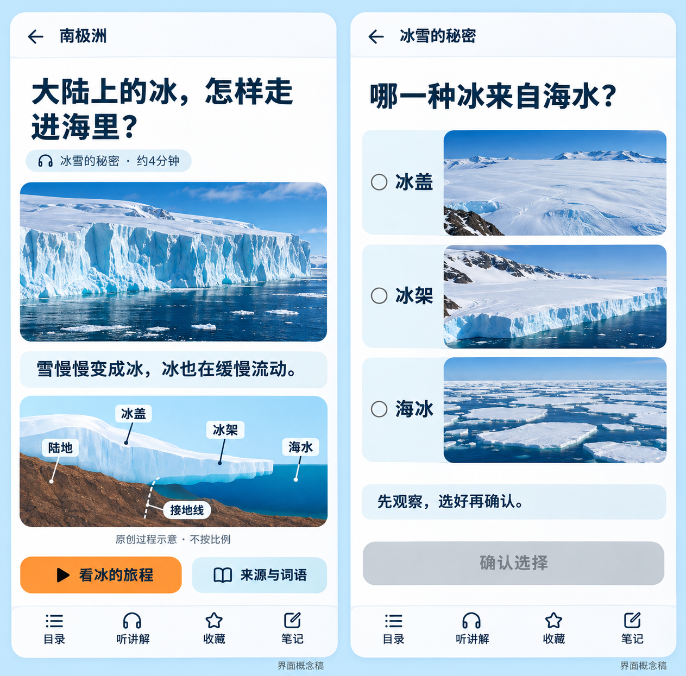
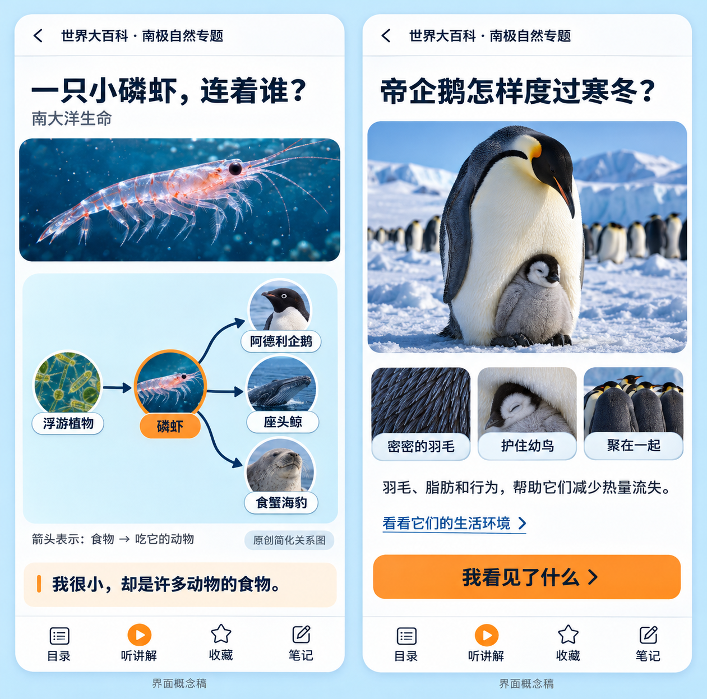
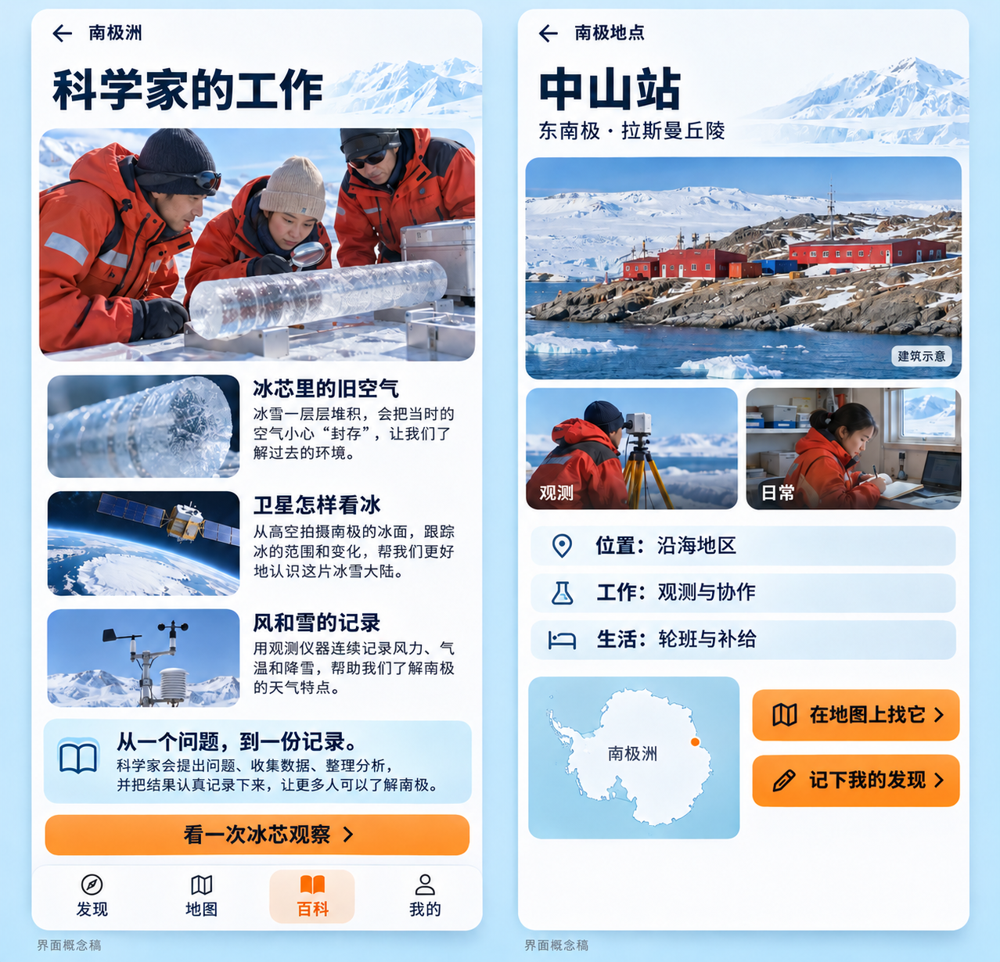
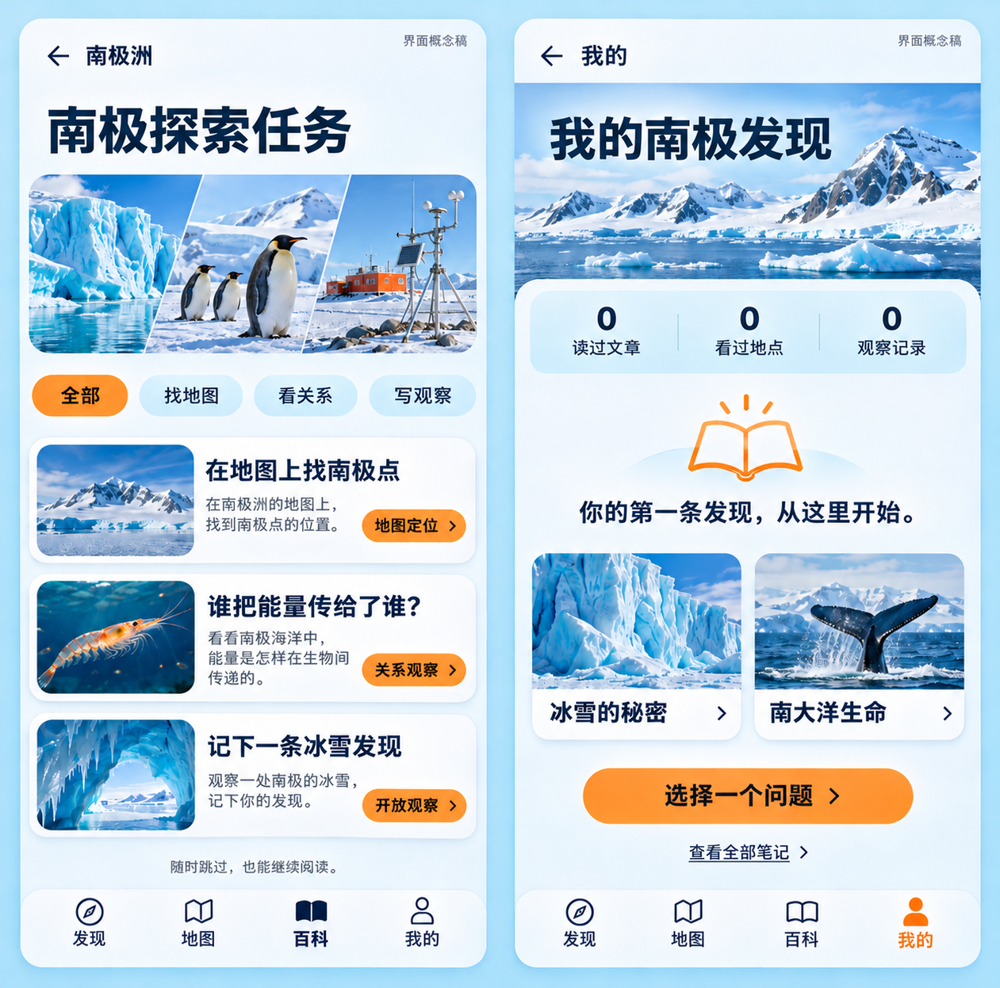
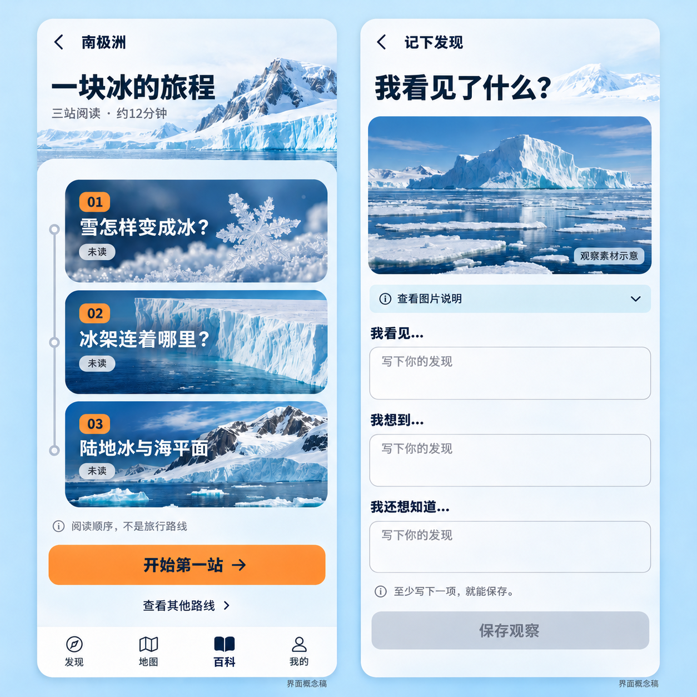

南极洲 · 实现验收01 · 专题首页与目录
展开原设计稿对照

02 · 极地地图与地点抽屉
展开原设计稿对照

03 · 冰架阅读与分类任务
展开原设计稿对照

04 · 食物网与帝企鹅
展开原设计稿对照

05 · 科学栏目与中山站
展开原设计稿对照

06 · 极昼与历史时间线
展开原设计稿对照

07 · 探索任务与我的发现
展开原设计稿对照

08 · 阅读路线与观察记录
展开原设计稿对照
